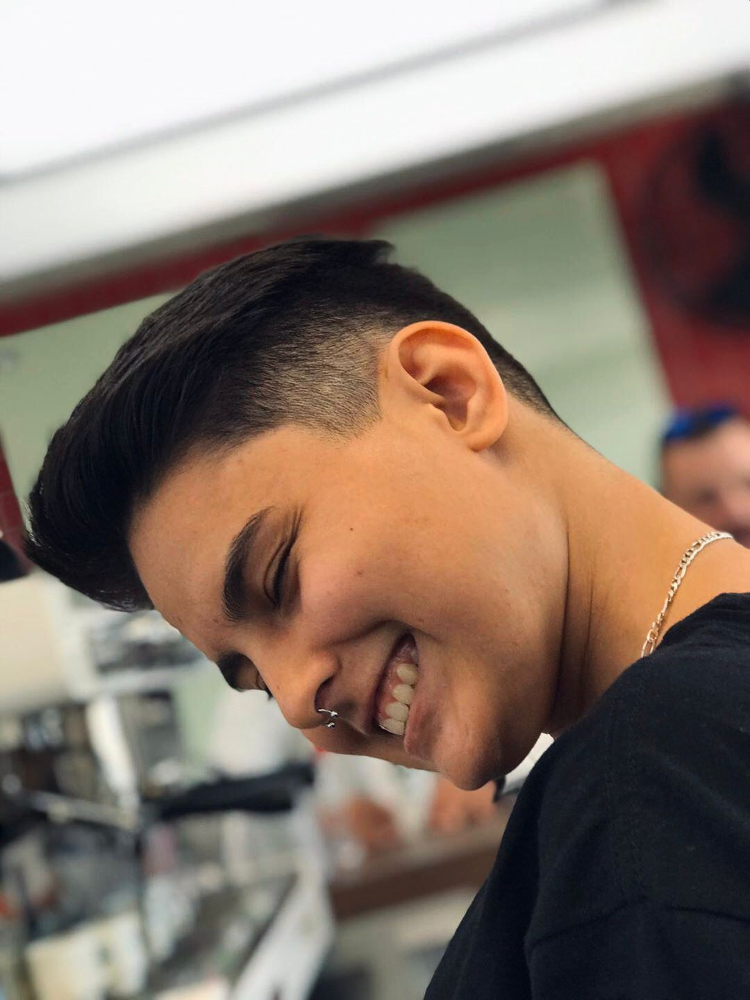

PORT
FOLIO
Barbara de Macedo de Souza - Unicesumar (1º período)


Barbara de Macedo
Curitiba, Brasil
barbara.macedo9810@gmail.com
(41) 99876-3411
(41) 99703-4923
Educação
UniCesumar — Engenharia de Software (cursando)
SOBRE MIM
Sou estudante de Engenharia de Software, com foco em desenvolvimento Front-end e Back-end. Iniciei minha jornada acadêmica em Análise e Desenvolvimento de Sistemas, e a transição para Engenharia de Software veio como um passo natural de crescimento, buscando ampliar meus conhecimentos técnicos e ter mais oportunidades na área de tecnologia.
Tenho um olhar criativo e analítico para o desenvolvimento web, com interesse especial em criar interfaces intuitivas, funcionais e visualmente atraentes. Estou sempre em busca de aprimorar minhas habilidades e acompanhar as tendências do setor.
PROJETOS
Brisa & Aroma — Site Gastronômico
Desenvolvimento de um site gastronômico com foco em experiências sensoriais. O projeto inclui um cardápio interativo e integração com o WhatsApp para envio direto de sugestões e pedidos.
Construído com Python e Flask no back-end, utilizando HTML, CSS e JavaScript para o layout responsivo e as interações dinâmicas.
Tecnologias: Python, Flask, HTML, CSS, JS
Ver projeto no GitHubLavuna — Site Institucional
O Lavuna é um site institucional voltado à beleza e bem-estar, criado para transmitir leveza, elegância e confiança. Possui um design minimalista, tipografia harmoniosa e layout totalmente responsivo.
Desenvolvido com HTML e CSS puro para estrutura e estilo, além de integração com Java para o sistema de chat, que adiciona interatividade e aproxima o usuário da marca.
Tecnologias: HTML, CSS e Java — em desenvolvimento
Ver projeto onlineRaízes de Vó — Vitrine Gastronômica
Projeto de vitrine digital desenvolvido para uma marca pessoal de gastronomia afetiva. O layout combina HTML e CSS puro para criar uma apresentação acolhedora e moderna, com seções como “Cardápio” e “Nossa História”.
Inclui pequenos scripts em Java para aprimorar a navegação e preparar futuras funcionalidades dinâmicas. Totalmente responsivo e adaptado a dispositivos móveis.
Tecnologias: HTML, CSS e Java — em desenvolvimento
Ver projeto onlineHabilidades
Experiências
Estagiário
SESA/NII - Núcleo de Informática e Informações | Jun 2025 - AtualAcompanhar e apoiar na análise de requisitos e modelagem de sistemas; construir novas funcionalidades e manutenções necessárias nos sistemas; realizar testes funcionais e unitários das funcionalidades; prover suporte a usuários esclarecendo dúvidas e identificando problemas. HTML, CSS, PHP, ScriptCase, entre outros.
Estagiário de Suporte Técnico
Mundivox Comunicações LTDA | Dez 2023 - Dez 2024Suporte supervisionado de auxílio técnico em redes, formatação e programação.
Acompanhamento de implantação de melhorias na engenharia de operações.
Suporte na construção de projetos sistêmicos, apoio na coleta de dados em diferentes sistemas e contribuições na melhoria de processos e automatizações.